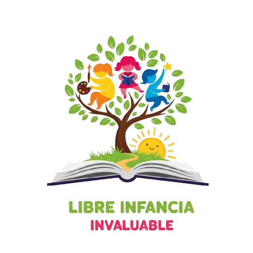
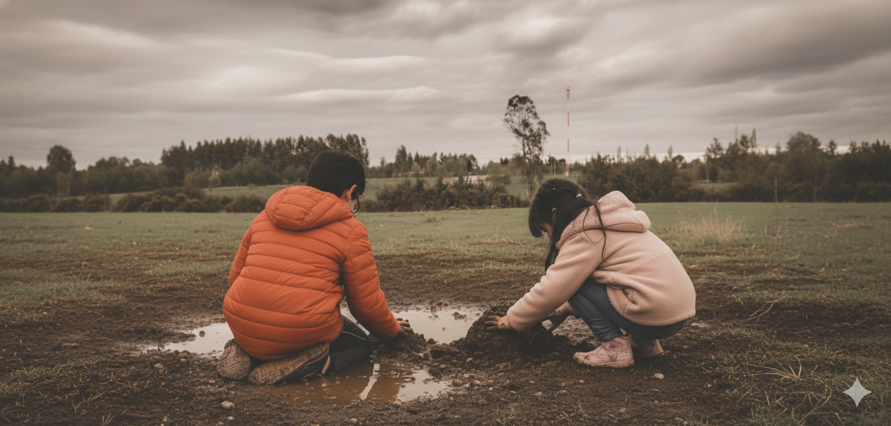
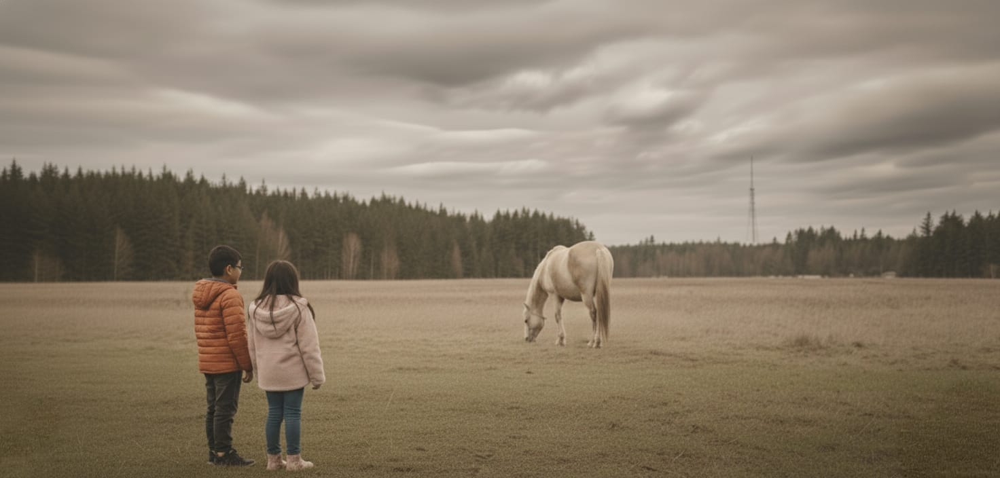
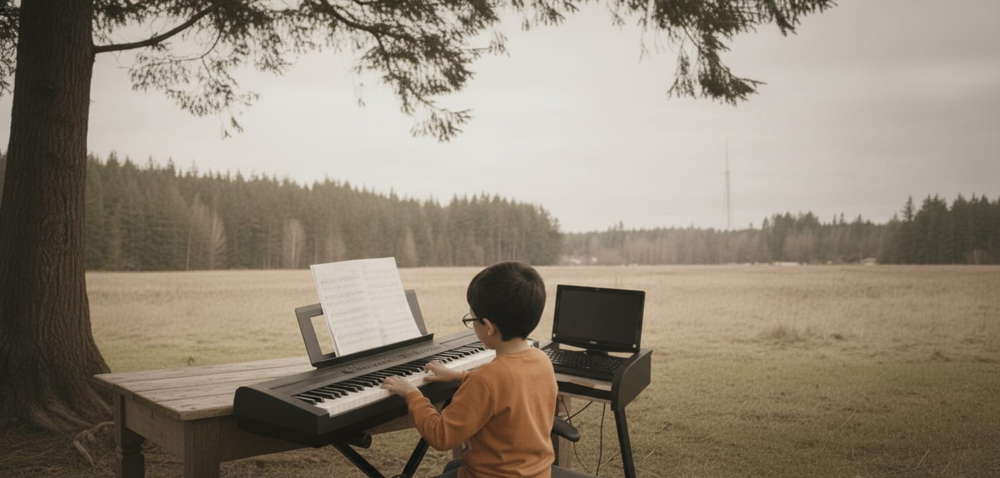
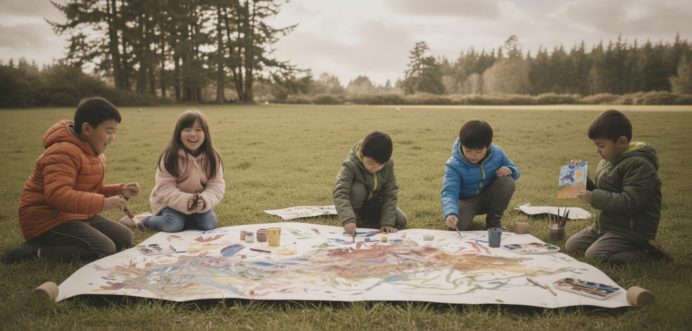
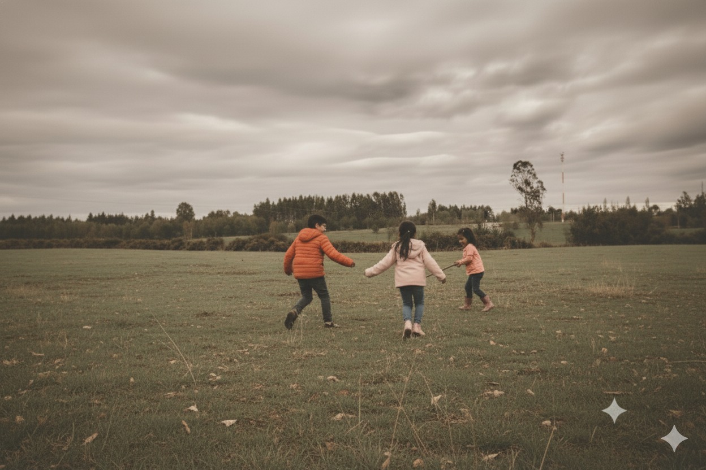
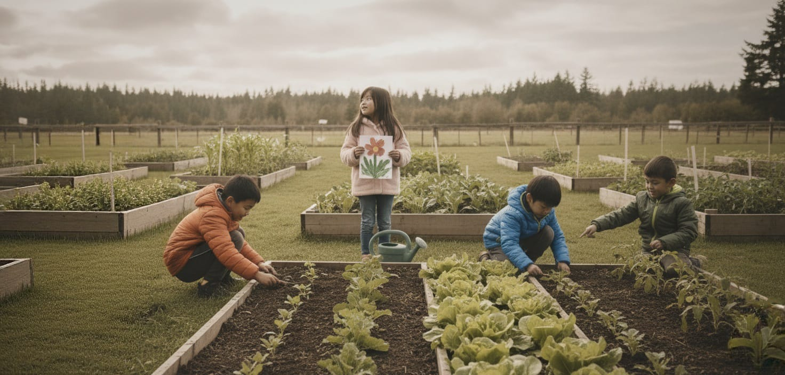

Bienvenidos a Escuela Libre Infancia Invaluable
Aprendizaje profundo en la naturaleza 🌿
Aprendizaje profundo en la naturaleza 🌿
La Escuela Libre Infancia Invaluable es una institución ubicada en el entorno rural de Ñirrimapu Maquehue (Padre las Casas), dedicada a la formación integral y personalizada. Su trabajo se basa en metodologías no tradicionales, respetando el ritmo evolutivo de cada niño para cultivar la curiosidad, la autonomía y la conciencia socioambiental.
Conoce la Metodología de la Escuela Agenda una Visita
La Escuela Infancia Invaluable fue fundada en abril de 2023 como respuesta a la necesidad de ofrecer una alternativa educativa de calidad, dirigida a familias que buscan una educación libre y en armonía con la naturaleza. El proyecto surge desde una visión de educación integral, respetuosa y conectada con el entorno rural.
Ubicada en el sector rural Ñirrimapu Maquehue km 6, en Padre las Casas, la escuela se asienta sobre tres hectáreas de áreas verdes. Este entorno natural no es solo el telón de fondo, sino la base de su modelo educativo. El principal interés de la institución es apoyar a los niños en el manejo de las emociones y en la búsqueda de una estabilidad afectiva, promoviendo un clima de bienestar físico y psicológico consciente. Actualmente, se preparan los niveles de preescolar y primer ciclo de enseñanza básica, con la proyección de convertirse en un colegio que imparta educación media.
La escuela busca formar niños y niñas con una alta conciencia social, que demuestren respeto por sus semejantes y su entorno. Se cultiva la autonomía para generar creatividad y liderazgo, desarrollando múltiples habilidades que les permitan enfrentarse a las exigencias de la sociedad actual.
La institución tiene como misión entregar una educación que respete el desarrollo evolutivo del niño, persiguiendo una formación integral y personalizada. Se fortalecen los vínculos entre las habilidades y las prácticas, estableciendo un nexo inamovible entre el afecto, la emoción y los objetivos académicos.

Los estudiantes participan en actividades agroecológicas, compostaje y experiencias al aire libre que fortalecen el vínculo con la naturaleza y la comunidad.

Se promueve la colaboración, el respeto y la diversidad. Los niños aprenden unos de otros con empatía y alegría.

El arte, la música, el teatro y la radio escolar forman parte esencial del aprendizaje emocional, creativo y libre de los estudiantes. A través de estos espacios, se potencia la expresión, la comunicación y el desarrollo integral en un ambiente respetuoso y colaborativo.
En la Escuela Libre Infancia Invaluable desarrollamos un modelo integral donde la educación va más allá de la transmisión de conocimientos. Nos enfocamos en tres pilares fundamentales:
Fomentamos que cada niño sea responsable de su propio aprendizaje, tomando decisiones e iniciativas propias en un ambiente de libertad con límites claros.
Valoramos la diversidad, la individualidad y el ritmo singular de cada estudiante, así como el respeto por el entorno natural y sus futuras generaciones.
Construimos una comunidad educativa donde la empatía, la cooperación y el diálogo son la base de la relación entre estudiantes y educadores.
Combinamos metodologías innovadoras con una visión pedagógica humanista. Nuestro trabajo se sustenta en:
Las actividades más importantes del proyecto están destacadas en una sección aparte para que puedan leerse con más claridad.
Estas actividades sostienen el aprendizaje cotidiano y conectan a los niños con la tierra, el arte, la lectura, la ciencia y la convivencia.
Los niños cultivan, siembran y cosechan. Aprenden sobre ciclos de vida, sostenibilidad y nutrición de forma práctica.
Talleres de pintura, escultura, música y teatro que permiten expresar emociones y desarrollar el pensamiento creativo.
Espacios de lectura compartida, cuentacuentos y biblioteca viva donde la literatura alimenta la imaginación.
Experimentos, observación de fenómenos naturales y investigación que despiertan la curiosidad sobre el mundo.
Dinámicas colaborativas que desarrollan empatía, comunicación y habilidades socioemocionales desde el movimiento.
Los niños aprenden haciendo, no solo observando. A través de talleres vivenciales exploran, experimentan y construyen su propio conocimiento. El aprendizaje activo desarrolla habilidades prácticas, pensamiento crítico y confianza en sí mismos.
Objetivos: Autonomía, confianza, pensamiento práctico.
La lectura compartida y el diálogo socrático despiertan el pensamiento reflexivo. Los niños aprenden a cuestionar, analizar y construir argumentos. La literatura y el diálogo fortalecen la capacidad de expresión y el pensamiento crítico.
Objetivos: Pensamiento crítico, expresión, comprensión profunda.
El juego es el lenguaje natural de la infancia. A través de juegos cooperativos y creativos, los niños desarrollan empatía, resiliencia y vínculos comunitarios. Aprenden a trabajar juntos, a resolver conflictos y a celebrar logros colectivos.
Objetivos: Empatía, resiliencia, cohesión comunitaria.
La metodología se centra en el desarrollo evolutivo del ser humano, considerando el querer, el sentir y el pensar. El aprendizaje se logra a través de un trabajo personalizado y significativo, con jornadas lectivas más cortas, que otorgan máxima importancia al juego y al aprender jugando.
El trabajo se orienta desde diferentes enfoques pedagógicos:
Se destacan los siguientes aspectos:
Las 3 hectáreas de terreno son la extensión natural de la sala de clases. La Bioaula es el espacio de aprendizaje privilegiado y el corazón del proyecto.
Se acerca a los niños a la naturaleza utilizándola como herramienta que promueve su desarrollo y aprendizaje, ofreciendo experiencias significativas que fomentan un sentido de pertenencia y respeto por el entorno y las tradiciones.
Actividades Clave en la Bioaula:
Si quieres explorar qué enfoque de aprendizaje se acerca más a tu manera de estudiar, entra al quiz local y revisa tu resultado en una página aparte. Desde ahí también puedes volver a esta sección cuando quieras.
Ir al quiz de metodologíaEn Infancia Invaluable, se asegura que el aprendizaje obtenido sea reconocido formalmente. Se prepara a los estudiantes para que cumplan satisfactoriamente con los programas del MINEDUC y obtengan la validación de estudios mediante los Exámenes Libres.
La modalidad de escuela libre está amparada legalmente por:

Clase de arte libre

Explorando el campo

Huerto y aprendizaje natural
El proceso de admisión es continuo y está diseñado para asegurar que las familias compartan la visión y los valores de la Escuela Libre Infancia Invaluable. No se realizan pruebas de admisión o selección rígida; se prioriza el compromiso de los padres con la educación libre, el respeto al ritmo evolutivo del niño y el proyecto educativo en la Bioaula. El primer paso es contactar a la escuela para conocer el espacio y la metodología en detalle.
Proyección: El objetivo es transformarse en un colegio que imparta educación media.
La enseñanza se basa en la práctica diaria de los siguientes valores:
¿Interesados en que sus hijos formen parte de la Bioaula? Se puede completar el formulario o contactar a la escuela para obtener más información y agendar una visita al espacio educativo.
📍 Ubicación:
Sector rural Ñirrimapu Maquehue km 6, Padre las Casas.
📞 Teléfono:
+56 9 7212 7281
✉️ Correo:
infanciainvaluable5@gmail.com
Formulario de Contacto:
En este espacio se insertará un formulario para que las familias puedan ingresar nombre, correo electrónico, teléfono y mensaje.
Escribir para Admisión 💌